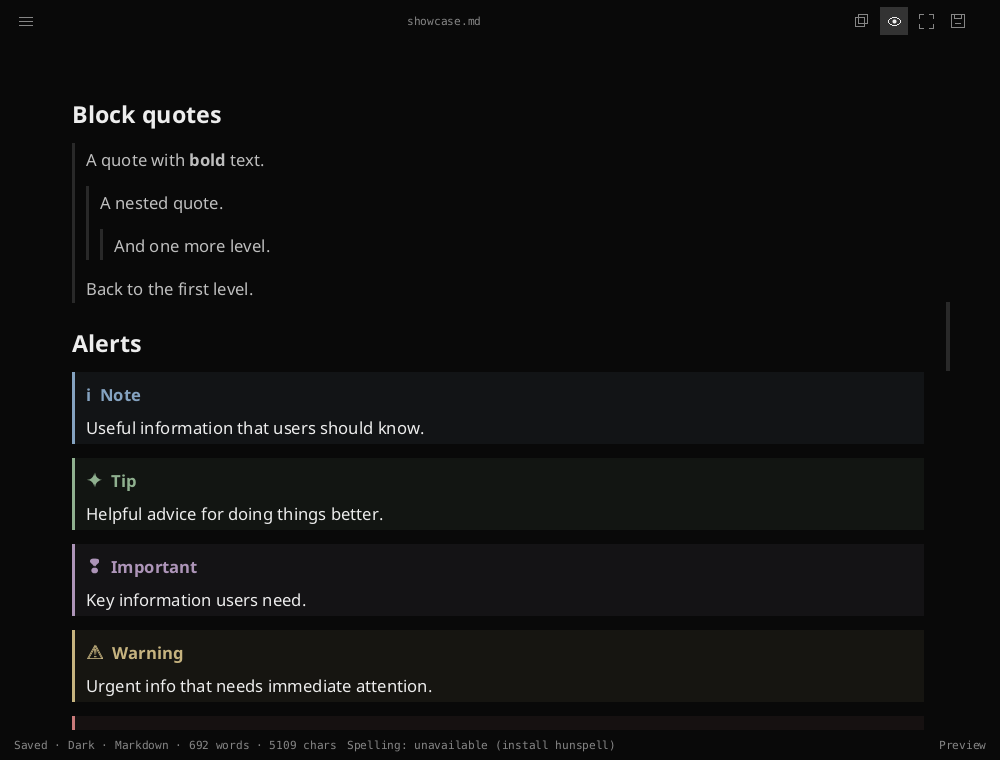

This file exercises every Markdown feature the Preview renders. It doubles as a regression fixture, so keep it complete rather than pretty.
Plain, italic, also italic, bold, also bold, bold italic, strikethrough, inline code, and code with a ` backtick. Snake_case_words and 2 * 3 * 4 stay as they are. Ctrl+S saves, H2O, E = mc2, marked and small print.
Escapes: *not italic*, # not a heading, [not a link], 1. not a list, \ backslash. Entities: © & <tag> © ☃ and &unknown; stays.
Hard break with two spaces
next line, and with a backslash
third line. A soft line break joins.
An inline link, a reference link, a collapsed reference, a shortcut link, an autolink https://nirux.org, a bare URL https://github.com/nirucon/nirunote, www.example.org and mail@example.com. Jump to the tables section or open another chapter. Unsafe: javascript, file.
Local image (scaled down to the page width):

Local SVG (shown when QtSvg is installed, else its alt text):
Remote image:
Missing image: 
First bullet
Second bullet with code
Third bullet
A paragraph ends the list, so the next one can start at seven:
Starts at seven
Eight
Loose list item one
Loose list item two with a second paragraph
The second paragraph belongs to the item.
A quote with bold text.
Back to the first level. |
ℹ Note Useful information that users should know. |
✦ Tip Helpful advice for doing things better. |
❢ Important Key information users need. |
⚠ Warning Urgent info that needs immediate attention. |
⊘ Caution Advises about risks or negative outcomes. |
python @decorator def greet(name: str = "world") -> None: """Say hello.""" # comment for i in range(3): print(f"Hello {name} {i}", 0x1F, 3.14) |
sh # Install and run nirux extras install nirunote && nirunote --read-only --heading "Tables" ~/notes.md export EDITOR=nirunote; echo "$HOME/${XDG_CONFIG_HOME:-.config}" | grep -q config |
toml [general] theme = "Follow NIRUX" # comment font_size = 17 enabled = true |
rust fn main() { let v: Vec<u32> = (1..=3).collect(); println!("{:?} {}", v, 'x'); } |
json {"name": "nirunote", "version": "0.7.0", "light": true, "deps": null} |
diff --- a/file +++ b/file @@ -1,2 +1,2 @@ -old line +new line context |
A fence without a language stays plain. |
Indented code block with two lines. |
A long code line must wrap rather than break the layout:
text this-is-a-very-long-line-without-spaces-that-goes-on-and-on-and-on-and-on-and-on-and-on-and-on-and-on-and-on-and-on-and-on-and-on |
| Left | Center | Right |
|---|---|---|
| a | b | 1 |
code | bold | 22 |
| escaped | pipe | link | 333 |
A wide table:
| Command | What it does | Default | Notes | More notes | Even more |
|---|---|---|---|---|---|
nirunote --read-only --heading "Some heading" file.md | Opens the file read-only, scrolled to the heading | off | A long cell that has to wrap across several lines to fit | x | y |
averyveryveryverylongunbreakabletokenthatdoesnotwrapanywhereatall | Long tokens | - | - | - | - |
Above a rule.
Below the rules.
Here is a footnote reference1 and another one2.
A very long word: Pneumonoultramicroscopicsilicovolcanoconiosis-and-then-some-more-text-without-spaces-that-keeps-going-and-going-until-it-must-wrap.
<script>alert("no")</script>
Summary text
Content inside details.
The end.